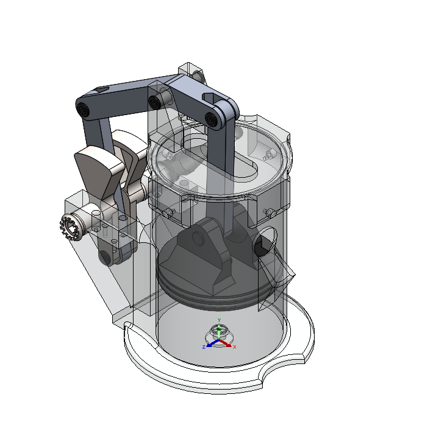
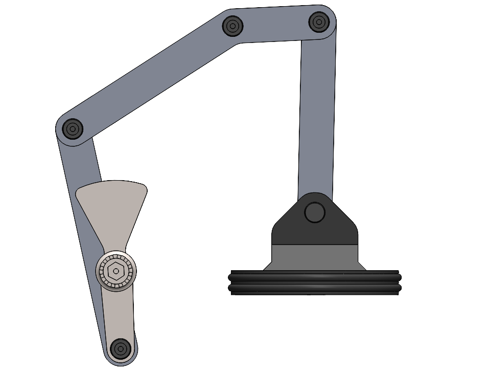

Introduction
HydroCrank is a human powered pumping mechanism developed in MECH 324 - Dynamics of Machines. The project focused on converting continuous rotational input into controlled reciprocating piston motion so water could be moved without relying on electrical infrastructure. The design was intended for simple, off grid operation, while still being manufacturable, serviceable, and mechanically clear in how loads move through the system.
The final concept combines crank, rocker, and slider style motion into a compact pumping assembly. My work centered on the mechanism layout, force based design decisions, MATLAB driven evaluation of joint loading and input torque, and fabrication of a full scale printed prototype that could validate motion, sealing, and overall functionality.
CAD Isometric View
The full assembly shows how the hand driven linkage, piston, pump body, and outlet path were integrated into a single compact mechanism.

Transparent Assembly View
This section view highlights the internal piston and sealing geometry that allow reciprocating motion to generate useful pumping action.
Design and Analysis
The HydroCrank was analyzed as a planar linkage system with a manually driven crankshaft, transmission links, and a piston assembly subjected to a conservative pumping load. A full force analysis was completed in MATLAB across the full range of motion using kinematic results carried forward from the earlier stage of the project. This allowed joint reaction forces and required input torque to be evaluated before final fabrication.
The analysis showed that the piston side joint carried the highest loading, which matched expectations because it directly transmitted the pumping force. The mechanism still maintained a useful mechanical advantage for manual operation, and the geometry was iterated to reduce peak user torque while keeping joint loads within a reasonable range for a printed prototype.

Mechanism Side View
The side view makes the motion path easy to read and shows how crank rotation is converted into piston travel within the pump body.

Full Prototype
The printed prototype preserved the intended geometry while giving a direct way to evaluate assembly quality, motion smoothness, and real component fit.
Prototype and Fabrication
All major structural parts were produced with FDM 3D printing using PLA Pro, which allowed the mechanism to be iterated quickly while maintaining enough stiffness for testing. Printed parts were sealed and assembled with standard fasteners, and the pump body and piston geometry were refined around sealing performance, friction, and manufacturability.
Fabrication work also involved evaluating part orientation, printed surface quality, gasket integration, and coating strategy. The sealing surfaces and piston assembly were especially important because the physical prototype had to demonstrate compression behavior while still moving freely enough for hand operation.

Pump Body Printing
The pump body was printed at full scale so wall thickness, fit, and internal geometry could be validated before final assembly.

Double Gasket Seal
The piston sealing system used a double gasket arrangement to improve compression efficiency and reduce blow by during reciprocating motion.

Piston and Seal Detail
Flex Seal coating was applied to help compensate for printed porosity and improve short term water sealing during testing.
Testing and Outcome
Full range of motion testing confirmed that the mechanism could cycle through the intended stroke without locking at toggle positions. The prototype demonstrated the overall pumping concept, validated the mechanical layout, and showed that the required user input stayed within a realistic manual operating range.
Testing also made the current limitations clear. Friction at the piston and seal interface remained one of the main issues, especially at low speed, and future iterations would benefit from more radial clearance and improved sealing tolerance. Even with those limitations, the HydroCrank successfully demonstrated how a compact, human powered linkage can be used to drive a pump through a full printed prototype and validate the overall mechanism design.